Yowmings LeagueA game that settles a real draft has to be one nobody can argue with.
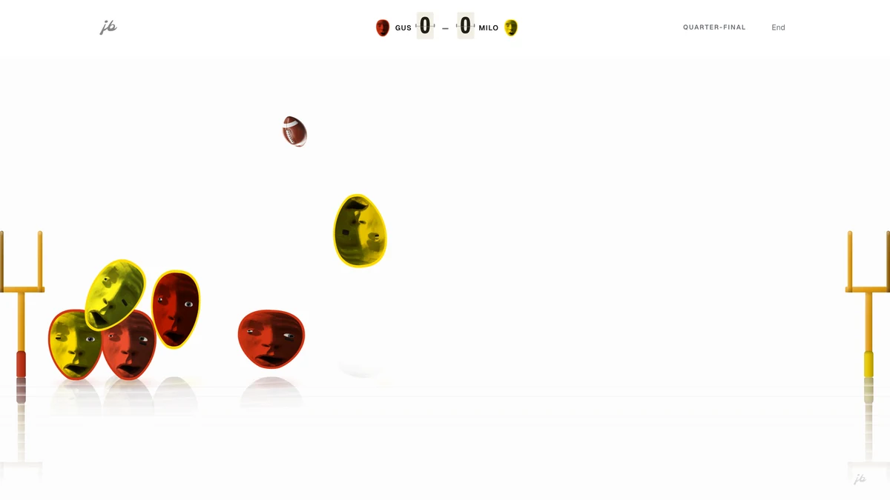
- Role
- Designer & builder
- Scope
- End to end, solo
- Built with
- Vanilla JS, no framework
- Year
- 2026
Every year my friends need a fantasy draft order. A random draw is fair. A game is better — but only if everyone believes the result.
Twelve of their faces drop down a marble course to seed a bracket, then play it out until someone takes the 1.01. It runs in a browser with no framework and no build step.
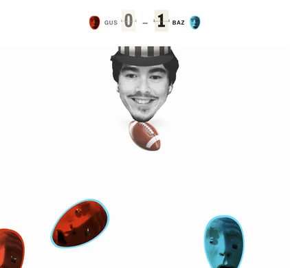
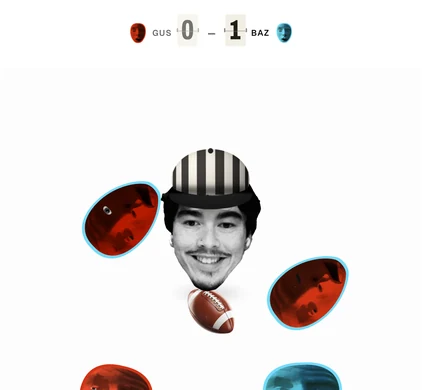
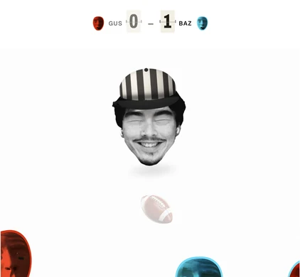
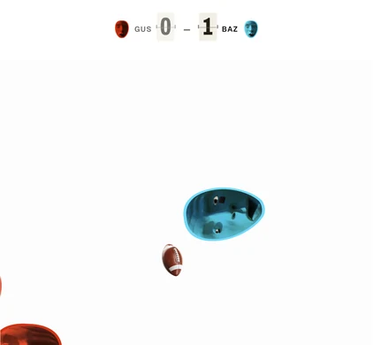
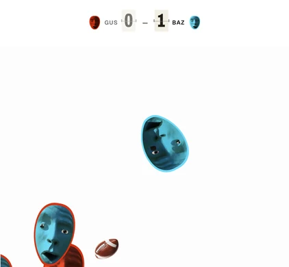
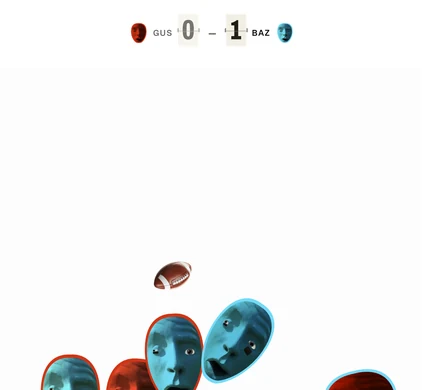
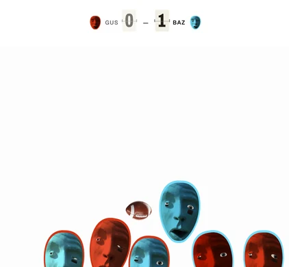
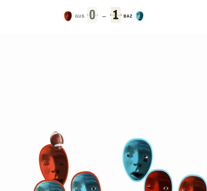
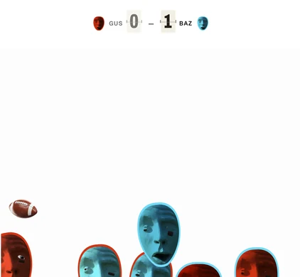
A toy can be wrong. A verdict cannot.
Nobody audits a game they played once. They audit the one that decided who picks first, and they do it out loud, while watching.
So “done” stopped meaning “fun” and started meaning “unarguable”. Six weeks, 991 commits, and the interesting work was never the feature — it was the gap between what my instruments measured and what the screen actually showed.
The race worked on the only screen I had measured.
The race seeds the bracket, so if it stalls there is no draft. Swept across nineteen viewport sizes, twenty-two races ended with nobody across the line. On a TV, fewer than one in five finished.
My theory was the fall. I measured first, and it was the gate: its bar scales with the course, its opening never did. Twenty-two stalled races became zero.
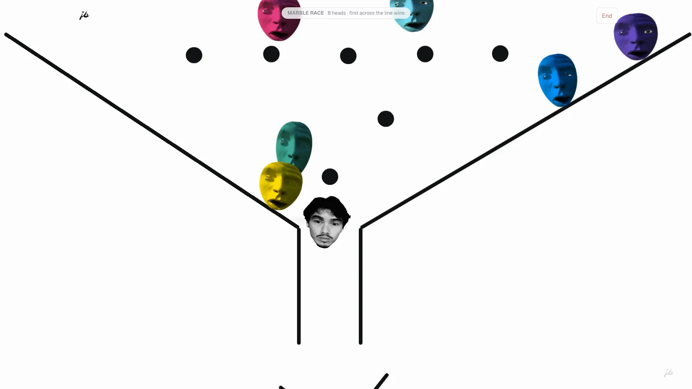
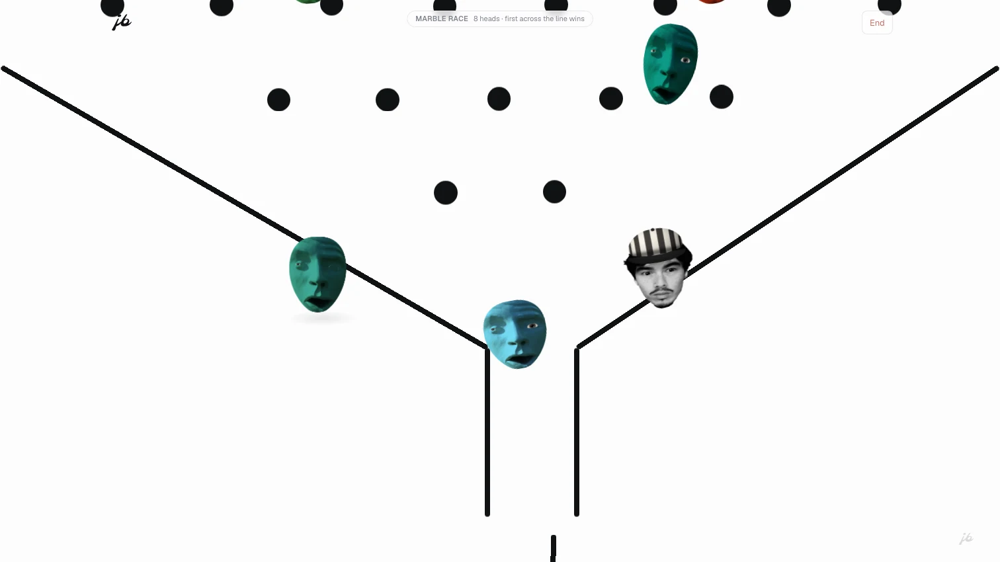
A head could reach a state with no way out.
Players froze mid-match — rarely, briefly, and exactly the kind of thing that gets brought up for a year.
A head could end up falling and not airborne at the same time, which nothing in the engine can leave. It was half of every frozen frame. The fix had to remove the freeze without removing the mess, because the chaos is the point: after it, the ball spent more time in the air, not less.
I argued for the wrong version, and the measurement won.
Balls were passing through the goal without scoring. Real football has no ceiling over the uprights, so I removed ours. It fixed the complaint outright.
It also awarded more than a quarter of goals with the ball in open sky above the posts — a picture that no longer matched its own rule. The version that shipped is narrower, and no goal lands above the posts now.
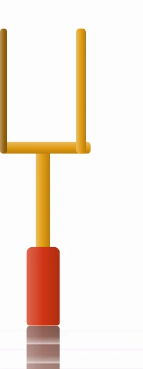
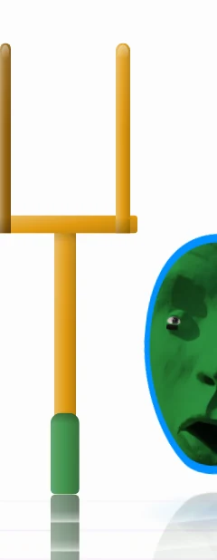
Counting is not looking.
Four times in one night an instrument said fine and the screen disagreed. A hairline that measured 1px read as a line struck through the score. A layout that measured “nothing off-screen” had two elements sitting on top of each other. Two captains’ names came out invisible on their own bar.
Both lie. The work is knowing which one you are holding.
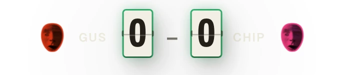
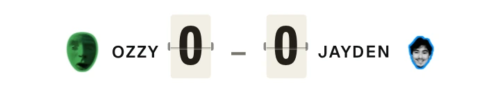
It decides something, and nobody argues.
Every race finishes, on every screen I could find. Players stay on their feet. Goals look like goals. And the thing it was built to protect survived all of it — the winner still is not the halfway leader in two races out of three.
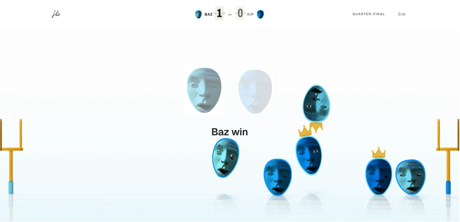
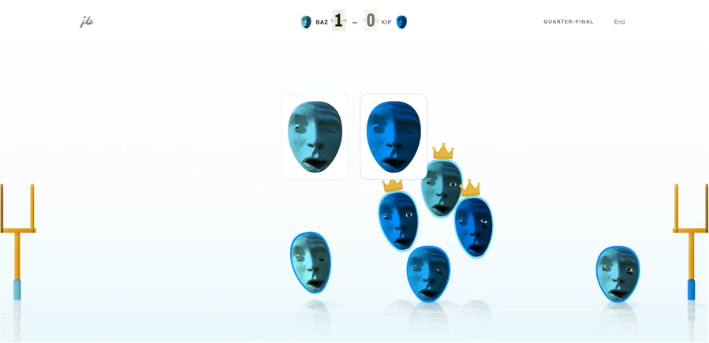
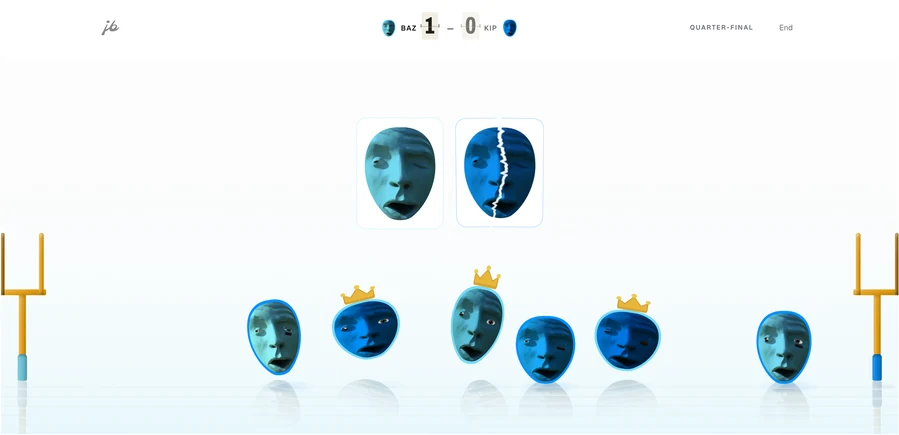
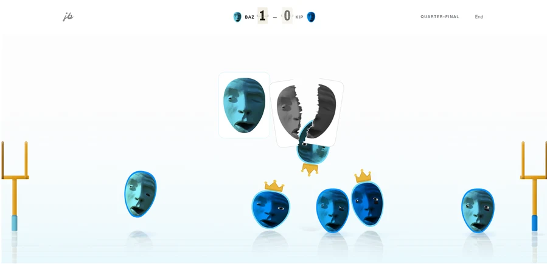
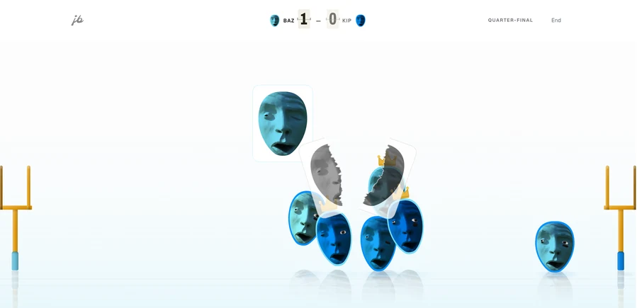
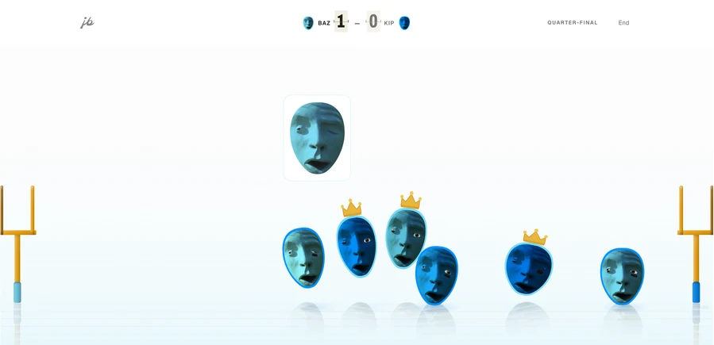